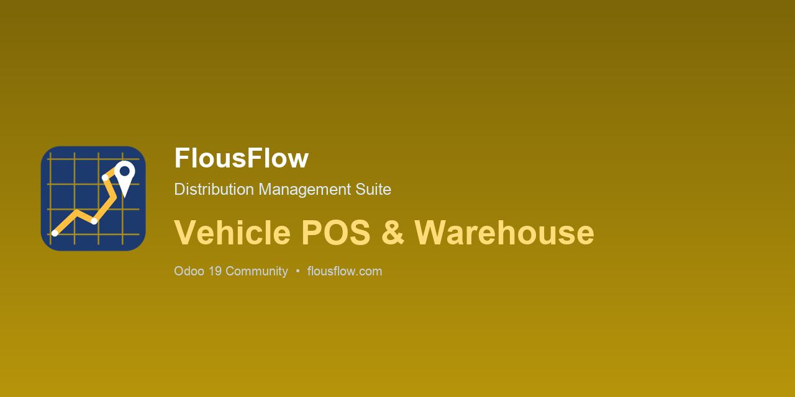

Templates
Create ordered questions with response type, required note and required photo rules.

FLOUSFLOW · ODOO 19
Run reliable daily and ad hoc vehicle checks before a route starts, with manager review and complete evidence.
Create ordered questions with response type, required note and required photo rules.
Generate daily tasks for assigned drivers and support ad hoc inspections when needed.
Capture photos and notes, submit results, and let managers approve, reject or track overdue work.
Add the repository to addons_path, update the Apps list, then install the module. The route and vehicle dependencies are declared in the manifest.
LGPL-3 · © FlousFlow